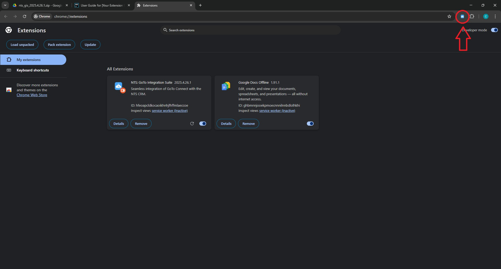
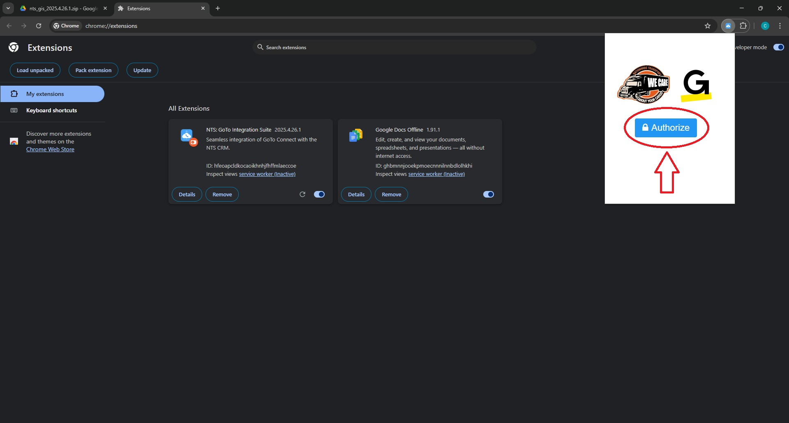
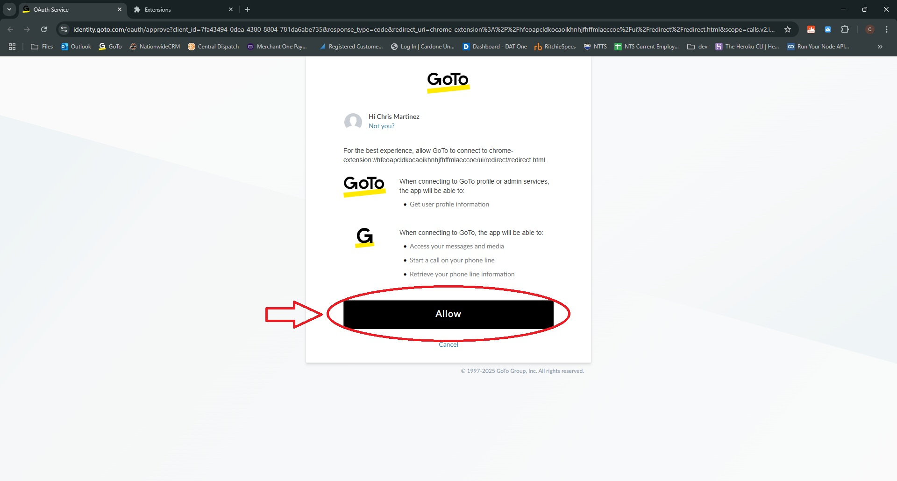
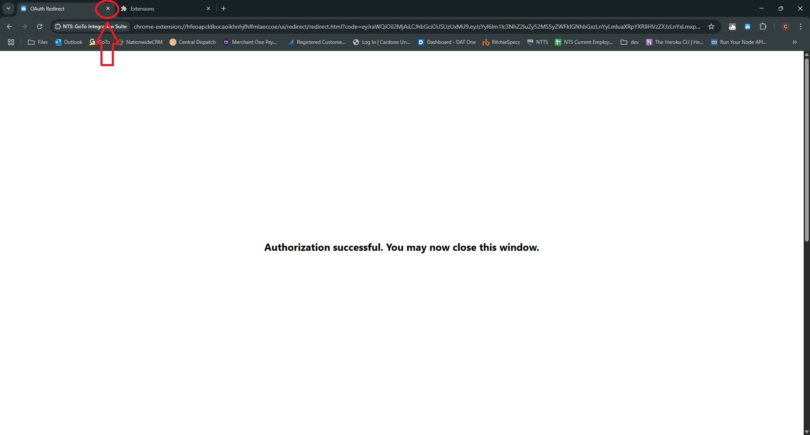
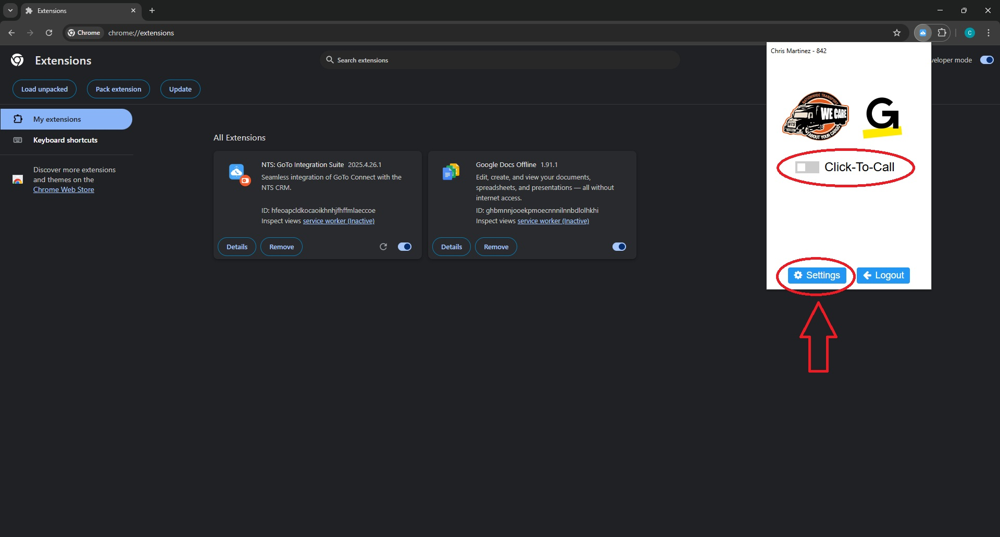
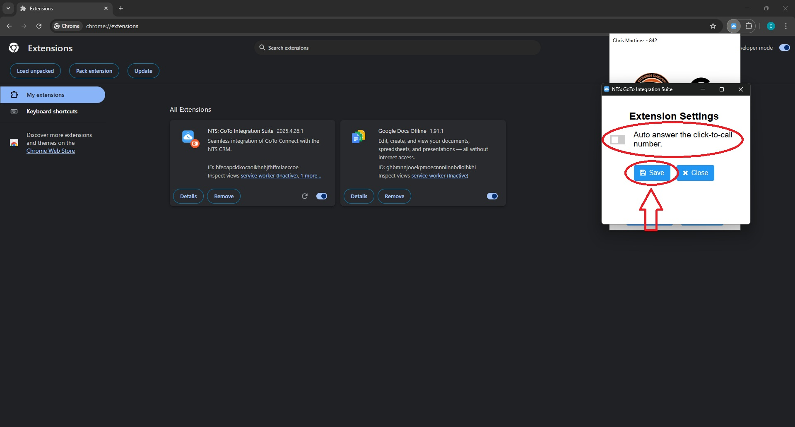
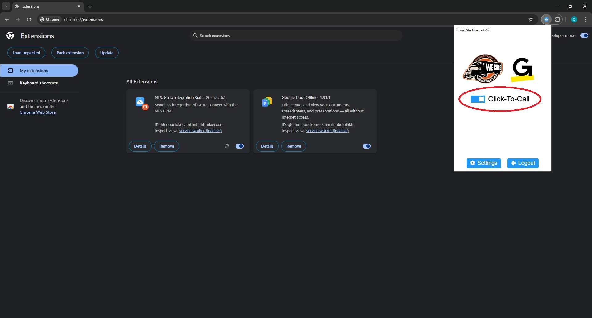

Set-up
Now that the extension is installed it must be set up for use
Step 1: Click the extension icon in the toolbar.

This will open the extension's popup.
Step 2: Click the Authorize button.

After you click Authorize, you will be redirected the GoTo authorization page.
If you aren't signed in, you will be prompted to sign in to your GoTo account.
Step 3: Click the Allow button.

You should now see this page that tells you the status of the authorization.
Step 4: Close this tab.

Step 5: Click the extension icon in the toolbar, and then click the Update Info button.
After clicking the Update Info button, you will see the current features of the extension.
Turn on the Click-To-Call feature by clicking the toggle button. This auto saves.
You can change the default behavior of certain features by clicking the settings button.
.
Clicking the settings button will open a new window.
Choose which settings to change and click Save.
.
You are now ready to start using the extension.
.